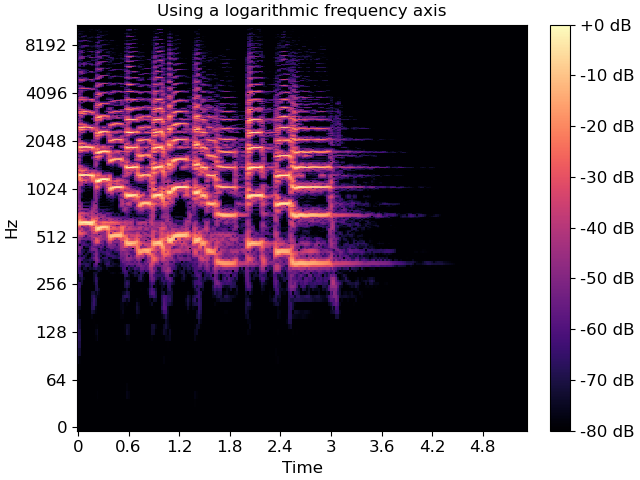
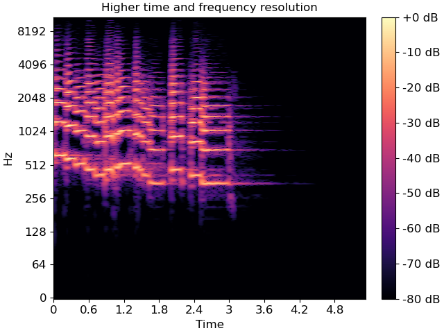
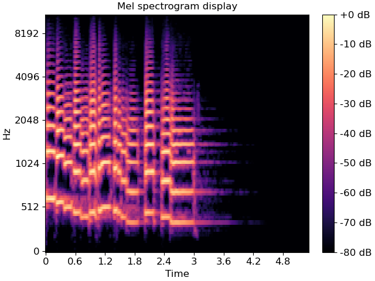
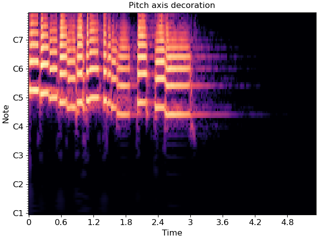

Note
Click here to download the full example code
Using display.specshow¶
This notebook gives a more in-depth demonstration of all things that specshow can do to help generate beautiful visualizations of spectro-temporal data.

- 
- 
- 
- 
# Code source: Brian McFee
# License: ISC
# sphinx_gallery_thumbnail_number = 15
# %%
# All of librosa's plotting functions rely on matplotlib.
# To demonstrate everything we can do, it will help to
# import matplotlib's pyplot API here.
import numpy as np
import matplotlib.pyplot as plt
import librosa
import librosa.display
# %%
# First, we'll load in a demo track
y, sr = librosa.load(librosa.ex('trumpet'))
# %%
# The first thing we might want to do is display an ordinary
# (linear) spectrogram.
# We'll do this by first computing the short-time Fourier
# transform, and then mapping the magnitudes to a decibel
# scale.
#
D = librosa.stft(y) # STFT of y
S_db = librosa.amplitude_to_db(np.abs(D), ref=np.max)
# %%
# If you're familiar with matplotlib already, you may know
# that there are two ways of using it: the `pyplot` interface
# and the object-oriented interface.
# Both are supported by librosa, as we'll show here.
#
# First, the pyplot interface:
plt.figure()
librosa.display.specshow(S_db)
plt.colorbar()
# %%
# And now the object-oriented interface
fig, ax = plt.subplots()
img = librosa.display.specshow(S_db, ax=ax)
fig.colorbar(img, ax=ax)
# %%
# Both figures are identical, but they use different programming
# interfaces to construct. Most people find the pyplot interface
# to be quicker to learn, but the object-oriented interface can
# be a little more flexible for complex figures.
#
# For the remainder of this example, we'll use the object-oriented
# interface.
# %%
# Decorating your plot
# --------------------
# The figure above conveys the basic content of the spectrogram,
# but it's missing axis labels. Without that information, it's
# impossible for a reader to know how to interpret the visualization.
#
# specshow provides many helpers to automatically decorate the axes
# of your plot. For the plot above, our x-axis corresponds to time,
# and our y-axis corresponds to linearly spaced frequencies produced
# by the discrete Fourier transform.
# We can tell specshow to decorate the axes accordingly:
fig, ax = plt.subplots()
img = librosa.display.specshow(S_db, x_axis='time', y_axis='linear', ax=ax)
ax.set(title='Now with labeled axes!')
fig.colorbar(img, ax=ax, format="%+2.f dB")
# %%
# This is much better already! Note that we also added a format string
# to the colorbar, so readers know how to read the color scale.
# %%
# Changing axis scales
# --------------------
# The linear frequency scale is sometimes helpful, but often it can
# difficult to read. Alternatively, it is common to use a logarithmic
# frequency axis. This has the benefit that every octave occupies
# a constant vertical extent.
#
# We can tell specshow to use log-scaled frequency axes just as above:
fig, ax = plt.subplots()
img = librosa.display.specshow(S_db, x_axis='time', y_axis='log', ax=ax)
ax.set(title='Using a logarithmic frequency axis')
fig.colorbar(img, ax=ax, format="%+2.f dB")
# %%
# Changing the analysis parameters
# --------------------------------
# The default parameter settings used by librosa (e.g., `sr=22050`, `hop_length=512`,
# etc) may not be appropriate for every signal.
# If you change a parameter from its default value, e.g. when computing an STFT,
# you can pass that same parameter to `specshow`.
# This ensures that axis scales (e.g. time or frequency) are computed correctly.
fig, ax = plt.subplots()
D_highres = librosa.stft(y, hop_length=256, n_fft=4096)
S_db_hr = librosa.amplitude_to_db(np.abs(D_highres), ref=np.max)
img = librosa.display.specshow(S_db_hr, hop_length=256, x_axis='time', y_axis='log',
ax=ax)
ax.set(title='Higher time and frequency resolution')
fig.colorbar(img, ax=ax, format="%+2.f dB")
# %%
# Note that only the parameters which are strictly necessary are supported by
# `specshow`. For example, without the `hop_length`, we wouldn't know how to
# translate frame indices to time indices. However, `n_fft` is *not* needed,
# because it can be inferred from the shape of the input spectrogram.
#
# A full list of the supported parameters is provided in the
# `librosa.display.specshow` documentation.
# %%
# Other types of spectral data
# ----------------------------
# The examples above illustrate how to plot linear spectrograms,
# but librosa provides many kinds of spectral representations:
# Mel-scaled, constant-Q, variable-Q, chromagrams, tempograms, etc.
#
# specshow can plot these just as well. For example, a Mel spectrogram
# can be displayed as follows:
fig, ax = plt.subplots()
M = librosa.feature.melspectrogram(y=y, sr=sr)
M_db = librosa.power_to_db(M, ref=np.max)
img = librosa.display.specshow(M_db, y_axis='mel', x_axis='time', ax=ax)
ax.set(title='Mel spectrogram display')
fig.colorbar(img, ax=ax, format="%+2.f dB")
# %%
# Constant-Q plots, and other logarithmically scaled frequency representations
# such as Variable-Q or `iirt` can be decorated using either the frequencies (Hz)
# or their note names in scientific pitch notation:
C = librosa.cqt(y=y, sr=sr)
C_db = librosa.amplitude_to_db(np.abs(C), ref=np.max)
fig, ax = plt.subplots()
librosa.display.specshow(C_db, y_axis='cqt_hz', x_axis='time', ax=ax)
ax.set(title='Frequency (Hz) axis decoration')
fig, ax = plt.subplots()
librosa.display.specshow(C_db, y_axis='cqt_note', x_axis='time', ax=ax)
ax.set(title='Pitch axis decoration')
# %%
# In the latter case, the underlying data representation is still measured in
# Hz; only the tick labels are changed.
# %%
# Chroma representations don't have a fixed frequency axis, and instead aggregate
# information across all frequencies corresponding to a given pitch class.
# specshow can plot these too:
chroma = librosa.feature.chroma_cqt(y=y, sr=sr)
fig, ax = plt.subplots()
img = librosa.display.specshow(chroma, y_axis='chroma', x_axis='time', ax=ax)
ax.set(title='Chromagram demonstration')
fig.colorbar(img, ax=ax)
# %%
# If you also happen to know the key of the piece being analyzed, you can
# pass this to specshow and it will spell the notes properly:
fig, ax = plt.subplots()
img = librosa.display.specshow(chroma, y_axis='chroma', x_axis='time',
key='Eb:maj', ax=ax)
ax.set(title='Chromagram explicitly in Eb:maj')
fig.colorbar(img, ax=ax)
# %%
# This will also work for 'cqt_note' mode.
# %%
# Non-spectral data
# -----------------
# specshow can also be used for data that isn't exactly spectro-temporal.
# One common application is recurrence (self-similarity) plots, which
# are time-by-time, as illustrated below.
R = librosa.segment.recurrence_matrix(chroma, mode='affinity')
fig, ax = plt.subplots()
img = librosa.display.specshow(R, y_axis='time', x_axis='time', ax=ax)
ax.set(title='Recurrence / self-similarity')
fig.colorbar(img, ax=ax)
# %%
# In this example, notice that we used 'time' for both axis labels.
# In general, any of the supported modes can be used for either axis.
# For example, we could also plot the chroma covariance plot with
# chroma decorations on each axis:
ccov = np.cov(chroma)
fig, ax = plt.subplots()
img = librosa.display.specshow(ccov, y_axis='chroma', x_axis='chroma',
key='Eb:maj', ax=ax)
ax.set(title='Chroma covariance')
fig.colorbar(img, ax=ax)
# %%
# Color maps
# ----------
# You may have noticed that the color mappings for the images above
# were selected automatically by `specshow`.
# This is done by `librosa.display.cmap` according to the following heuristic:
#
# - If the data is boolean, use black-and-white
# - If the data is (mostly) positive or (mostly) negative, use a sequential
# colormap
# - If the data contains both positive and negative values, use a diverging
# colormap.
#
# The default sequential colormap is 'magma', which is perceptually uniform and
# converts gracefully to grayscale.
#
# You can always override this automatic colormap selection by setting an
# explicit `cmap`:
fig, ax = plt.subplots()
img = librosa.display.specshow(S_db, cmap='gray_r', y_axis='log', x_axis='time', ax=ax)
ax.set(title='Inverted grayscale')
fig.colorbar(img, ax=ax, format="%+2.f dB")
# %%
# `specshow` uses `matplotlib.pyplot.pcolormesh` to generate the underlying image.
# Any parameters to `pcolormesh` can be passed through from `specshow`, for example,
# to set explicit bounds on the minimum and maximum ranges for colors.
# This can be helpful when centering divergent colormaps around 0 (or some other
# reference point).
max_var = np.max(np.abs(ccov))
fig, ax = plt.subplots()
img = librosa.display.specshow(ccov, vmin=-max_var, vmax=max_var,
y_axis='chroma', x_axis='chroma',
key='Eb:maj', ax=ax)
ax.set(title='Chroma covariance')
fig.colorbar(img, ax=ax)
# %%
# Multiple plots
# --------------
# Often, we'll want to show multiple synchronized features simultaneously.
# This can be done using matplotlib's `subplot` mechanism and sharing axes.
# There are many examples of this throughout the librosa documentation, but
# here we'll go through it step by step.
# Construct a subplot grid with 3 rows and 1 column, sharing the x-axis)
fig, ax = plt.subplots(nrows=3, ncols=1, sharex=True)
# On the first subplot, show the original spectrogram
img1 = librosa.display.specshow(S_db, x_axis='time', y_axis='log', ax=ax[0])
ax[0].set(title='STFT (log scale)')
# On the second subplot, show the mel spectrogram
img2 = librosa.display.specshow(M_db, x_axis='time', y_axis='mel', ax=ax[1])
ax[1].set(title='Mel')
# On the third subplot, show the chroma features
img3 = librosa.display.specshow(chroma, x_axis='time', y_axis='chroma',
key='Eb:maj', ax=ax[2])
ax[2].set(title='Chroma')
# To eliminate redundant axis labels, we'll use "label_outer" on all subplots:
for ax_i in ax:
ax_i.label_outer()
# And we can share colorbars:
fig.colorbar(img1, ax=[ax[0], ax[1]])
# Or have individual colorbars:
fig.colorbar(img3, ax=[ax[2]])
# We can then even do fancy things like zoom into a particular time and frequency
# region. Since the axes are shared, this will apply to all three subplots at once.
ax[0].set(xlim=[1, 3]) # Zoom to seconds 1-3
# %%
# Non-uniform axes
# ----------------
# All of the examples so far have used either uniformly, linearly, or geometrically
# spaced axes. But sometimes, we have non-uniform sampling of data, and we'd like
# to plot it in natural coordinates.
#
# One example of this is when using beat-synchronous features in the common case
# where the tempo is not exactly fixed. To demonstrate this, we'll use a longer
# example clip.
#
# To specify non-uniform axis sampling, you will need to provide the `x_coords`
# (or `y_coords`) array indicating the position of each sample, as demonstrated
# below.
y, sr = librosa.load(librosa.ex('nutcracker'))
chroma = librosa.feature.chroma_cqt(y=y, sr=sr)
tempo, beats = librosa.beat.beat_track(y=y, sr=sr)
# beats contains the frame indices of each detected beat
# for synchronization and visualization, we'll need to expand this
# to cover the limits of the data. This can be done as follows:
beats = librosa.util.fix_frames(beats, x_min=0, x_max=chroma.shape[1])
# Now beat-synchronize the chroma features
chroma_sync = librosa.util.sync(chroma, beats, aggregate=np.median)
# For visualization, we can convert to time (in seconds)
beat_times = librosa.frames_to_time(beats)
# We'll plot the synchronized and unsynchronized features next
# to each other
fig, ax = plt.subplots(nrows=2, sharex=True)
img = librosa.display.specshow(chroma, y_axis='chroma', x_axis='time', ax=ax[0],
key='Eb:maj')
ax[0].set(title='Uniform time sampling')
ax[0].label_outer()
librosa.display.specshow(chroma_sync, y_axis='chroma', x_axis='time',
x_coords=beat_times, ax=ax[1], key='Eb:maj')
ax[1].set(title='Beat-synchronous sampling')
fig.colorbar(img, ax=ax)
# For clarity, we'll zoom in on a 15-second patch
ax[1].set(xlim=[10, 25])
# %%
# Conclusion
# ----------
# This series of examples demonstrates most of the functionality of
# `librosa.display.specshow`, but it does not exhaustively show
# every option, e.g., for axis decoration.
# Interested readers should look through the rest of the API
# documentation to see how these other options can be used
# effectively.
Total running time of the script: ( 0 minutes 21.614 seconds)